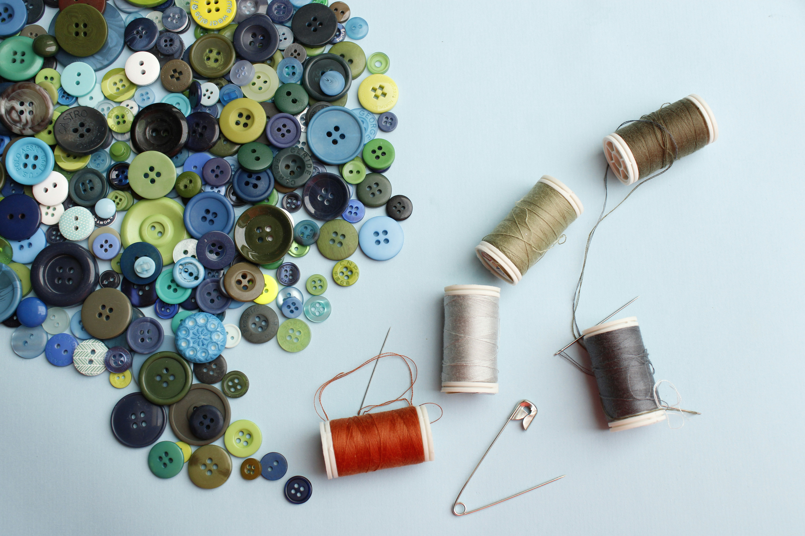
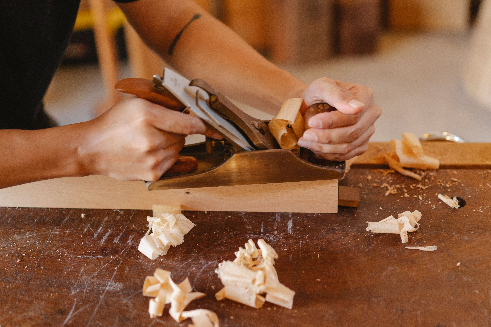
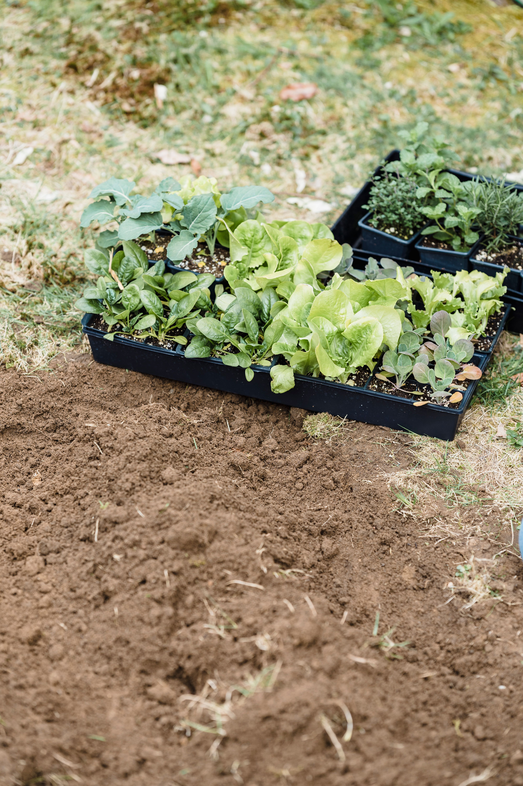
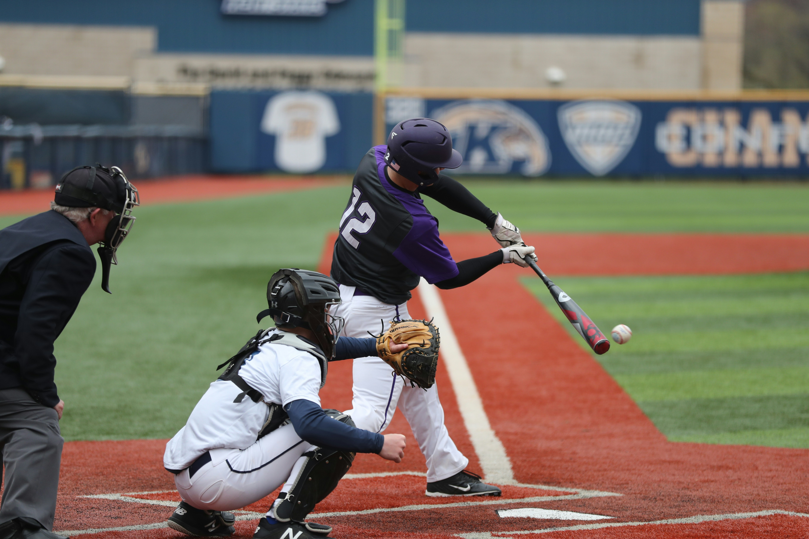

Sewing
Community creativity project — crafting unique pieces
We run 6 active programmes designed to meet the diverse needs of young people in our community.

Community creativity project — crafting unique pieces

Teaching local men and women basic woodwork skills

Saturday morning community programme.

Basic computer skills and internet safety. Equipping youth with essential 21st-century skills.

After-school sports programmes including softball, netball, baseball and rugby. Promoting physical health and teamwork.
Creative workshops in visual arts, drama, and music. Providing a safe outlet for self-expression and building confidence.
Whether you want to volunteer, donate, or partner with us, we'd love to hear from you.
Become a Volunteer